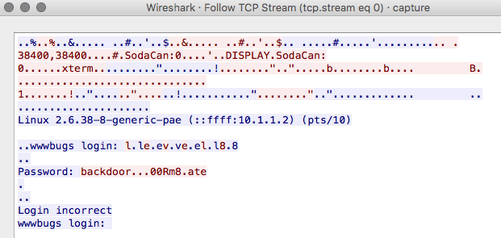

World readable files strike again. Check what that user was up to, and use it to log into flag08 account.
To do this level, log in as the level08 account with the password level08. Files for this level can be found in /home/flag08.
there is a pcap in the home directory, scp’ing this over and opening in wireshark gives us the below
scp level08@192.168.1.10:/home/flag08/capture.pcap .
level08@192.168.1.10's password:
capture.pcap 100% 8302 8.1KB/s 00:00
so the password looks to be backdoor...00Rm8.ate however
the . are represented by \x7f so the password
actually is backd00Rmate
level08@nebula:/home/flag08$ su flag08
Password:backd00Rmatesh-4.2$ whoami ; getflag
flag08
You have successfully executed getflag on a target account